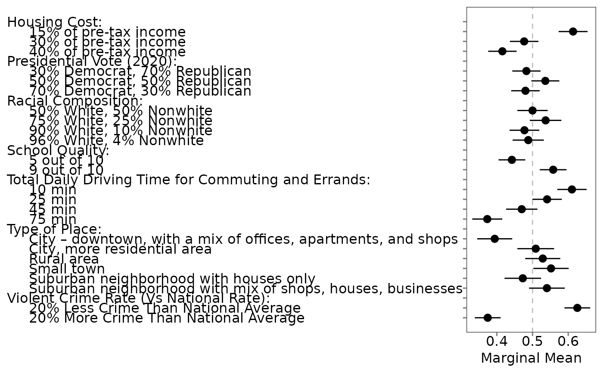

Creates publication-ready plots from a projoint_results object produced by
projoint. Supports both profile-level and choice-level analyses,
with plotting options tailored to each structure.
Arguments
- x
A
projoint_resultsobject (typically fromprojoint).- .estimates
Character: which estimates to plot. One of
"corrected","uncorrected", or"both"(for profile-level), and"corrected"or"uncorrected"(for choice-level). Default"corrected".- .by_var
Logical (profile-level only). Whether to plot subgroup differences. Default
FALSE.- .labels
Character vector of length 2 (choice-level only). Custom x-axis labels for bar/pointrange plots. If
NULL, labels are taken fromx$labels.- .base_size
Numeric. Base font size. Default
12.- .base_family
Character. Base font family. Default
""(system default).- .type
Character (choice-level only). One of
"bar"or"pointrange". Default"bar".- .show_attribute
Logical (choice-level only). Show the attribute name as the title when both levels belong to the same attribute. Default
TRUE.- .remove_xaxis
Logical (choice-level only). Remove x-axis line, ticks, and labels. Default
FALSE.- .xlim
Numeric length-2 vector (choice-level only). X-axis limits. Default
c(0, 1).- .plot.margin
Numeric length-4 vector (choice-level only). Plot margins in cm:
c(top, left, bottom, right). Defaultc(0, 3, 0, 3).- ...
Additional arguments passed to downstream plotting helpers.
Details
For profile-level results, only .by_var, .base_size, and .base_family
are relevant. For choice-level results, only .type, .labels,
.show_attribute, .remove_xaxis, .xlim, and .plot.margin
are relevant. Irrelevant arguments are ignored with a warning.
Examples
# \donttest{
data(exampleData1)
# Two base tasks (1 & 2) + repeated of task 1 (last)
dat <- reshape_projoint(
exampleData1,
.outcomes = c("choice1", "choice2", "choice1_repeated_flipped")
)
# Build a valid QOI from the labels
att <- unique(dat$labels$attribute_id)[1]
levs <- subset(dat$labels, attribute_id == att)$level_id
lev_names <- sub(".*:", "", levs)
q <- set_qoi(
.structure = "choice_level",
.estimand = "mm",
.att_choose = att,
.lev_choose = lev_names[2],
.att_notchoose = att,
.lev_notchoose = lev_names[1]
)
fit <- projoint(dat, .qoi = q)
# Plot method
plot(fit)

# }